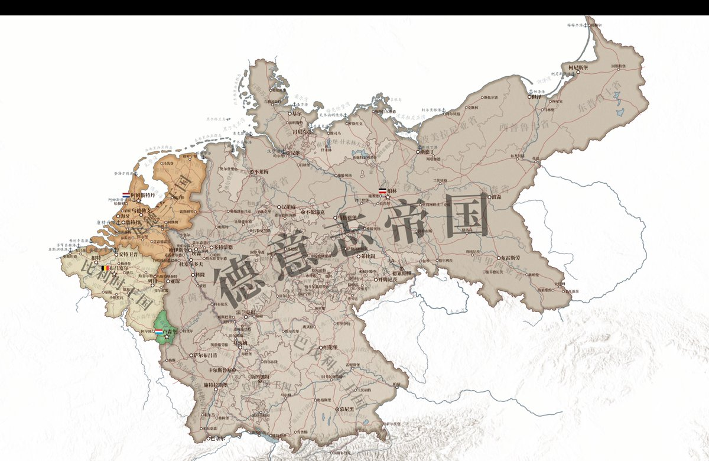
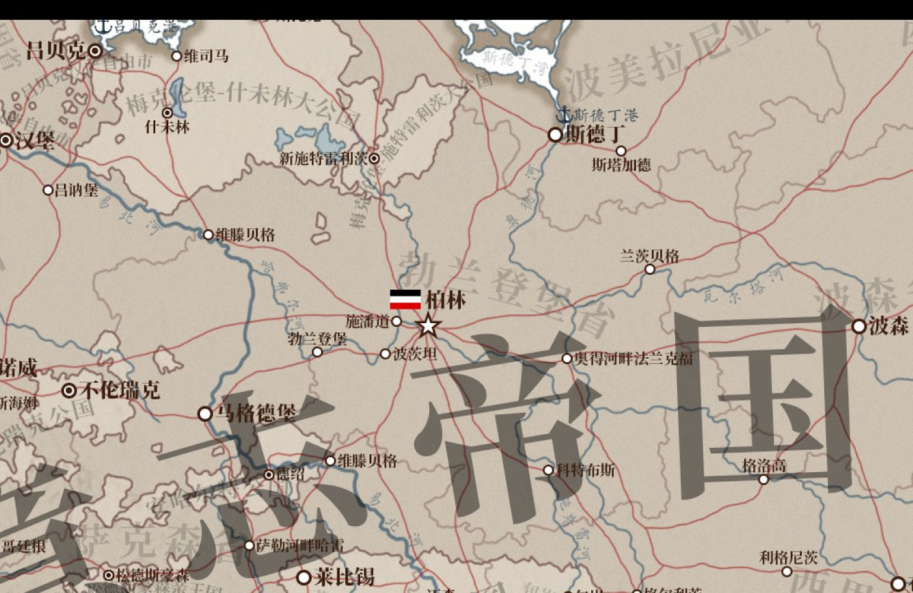
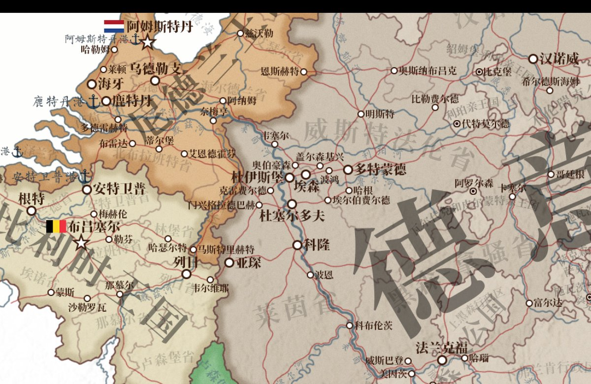
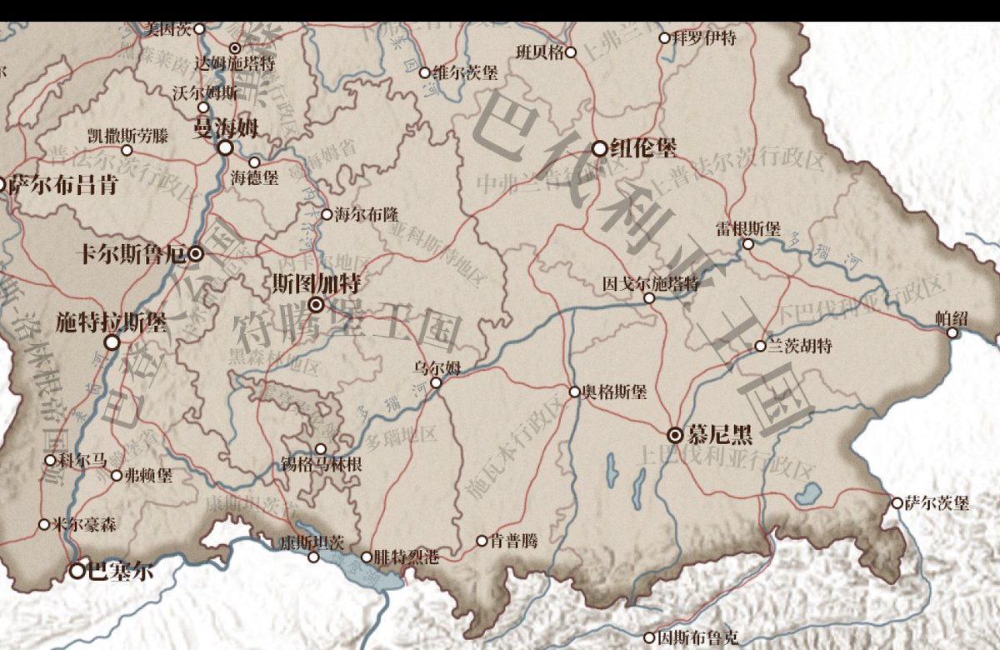

mortis
@0Yowlry
@kujirarara_ 柯尼斯堡自古以来就是德意志领土不可分割的一部分，任何认为柯尼斯堡属于俄罗斯的想法都是违背事实的




くじら
@kujirarara_
弄了大概两个星期才画完了德意志帝国，和比荷卢果然不是一个量级的。
还打算试着标注一些矿区，工业区，要塞，甚至海军，但还没想好怎么表达比较好看，就先这样了。 https://t.co/ooITGZMfn9